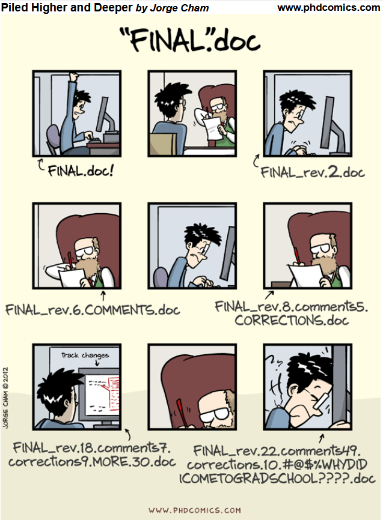
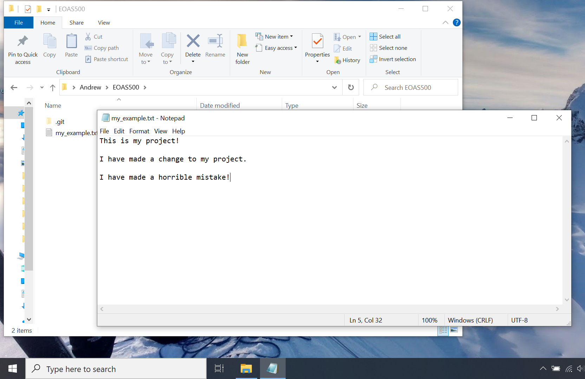

Git and GitHub Crash Course
Contents
Git and GitHub Crash Course#
By A. Loeppky, Teaching Assistant and OCESE project supporter.
The purpose of this tutorial is to help students or instructors who lack formal background in computer science by introducing several extremely helpful tools used for developing code keeping files organized.
To learn how to navigate your computer via a command line interface like Windows Powershell or Bash, refer to our similar Powershell and commandline tutorial.
This page is about setting up and using Git to track changes to files and using Github as a remote file backup system, to prevent the dreaded “computer crashes the week before a thesis defense, leaving you with nothing” scenario.
Source: http://phdcomics.com/comics/archive.php?comicid=1531>
Using Git#
Good housekeeping within your computer’s file system is an essential skill that every coder needs to develop. Writing and debugging code often involves a lot of trial and error, and often it makes sense to retain earlier versions of your project so in case you accidentally break your code, you can revert to the old version and try again. However, cluttered folders jammed with nearly identical copies of the same file/program is clearly not the elegant solution we would prefer to use. Git is a file management and version control system designed to avoid this scenario. Instead of saving each iteration of your project as a separate file and creating clutter, Git allows you to periodically check in your work (referred to as a commit in git parlance), keep notes on what changes were made, who made them, and allows you to revert to previous versions in case you or someone else accidentally introduces unwanted changes to your project. This is how most professional programmers keep track of their work. Beyond what is discussed here, Git has a huge range of additional features aimed at developers working collaboratively on complex software. Generally speaking, it is best to start with the simplest possible workflow progress from there depending on your team’s specific demands.
The instructions here are meant to set up a code repository on your computer to back up your work each time you make a change (making a commit), and save copies of your files in the cloud on Github (pushing files to a remote repository). Once we gain some familiarity committing and pushing with Git, we will be ready to tackle the full pull request workflow (meant for collaborating on projects with larger groups), cloning repositories (making a copy of someone else’s work and introducing your own changes), working on branches (making miniature copies of your work within a repository so as to try introducing changes without the risk of breaking the main code base). This is meant as a starting point to gain some familiarity with git and have a useful file management system for grad students who need to work with code. As you gain comfort with Git, the sky is the limit on how many/which features you can incorporate into your own workflow, depending on your needs.
Exercise#
Part 1: Using Git on Your Machine#
Begin by following the instructions here to install git on your computer. Next, we need to associate a username and email address with your git installation by opening a shell and typing:
$ git config --global user.name "Max Planck"
$ git config --global user.email mplanck@example.com
The name and email you enter here will be attached to each commit you make to your projects or ones you collaborate on. We are now ready to initialize a repository for our project. Open a shell and navigate (change directory using cd) to the EOAS500 folder we created earlier, then type git init to create the repository.
$ cd EOAS500
$ git init
Open a file explorer or finder window and navigate to EOAS500. You may see a .git folder has appeared there. We are now able to track all changes that occur to files within this folder using git. If we wish to track files from another folder, we could navigate there and type git init to initialize another separate repository. If you cannot see the .git folder you may have to figure out how to show “hidden folders” in your file navigator.
Now let’s add some content to our folder, as if we were working on a real project. For this example, create a file called my_example.txt using a text editor and save it in your EOAS500 folder. Git will tolerate almost any file type (.txt, .csv, docx, .py, .R, .m, etc).
Currently my_example.txt is saved on our hard drive but not tracked by git. You can check the status of the git repository by typing:
$ git status
You should see:
$ git status
On branch master
No commits yet
Untracked files:
(use "git add <file>..." to include in what will be committed)
my_example.txt
my_example.txt is listed as an untracked file, which means we have not saved any changes using git. Saving files to a git repository happens in two steps. First files are added to a staging area, then committed to the repository and logged.
$ git add my_example.txt
or to stage all files in the working directory, (right now there is only one) type:
$ git add .
If we wish to see the result of what we just did, type git status again (not necessary, but a good idea). You should see:
$ git status
On branch master
No commits yet
Changes to be committed:
(use "git rm --cached <file>..." to unstage)
new file: my_example.txt
As per the helpful hint provided above, you can remove files from the staging area using git rm --cached <file>. Once we are happy with which files are staged, it’s time to commit my_example.txt to our repository. Best practice is to include a short message with every commit, summarizing the changes you made in a few words. “initial commit” is a good commit message for the first commit to a repository. Type:
$ git commit -m 'initial commit'
Once you press enter, git saves everyting from the staging area to your repository, logs the author (you) time the commit was made (now), and assigns a commit hash, a unique alphanumeric key used to identify this particular commit. To show the log for your most recent commit, type:
$ git log -1
(To see your second most recent commit, replace the -1 with -2) The output should look something like:
commit dda127f4fe6ac60bd8fbba18d15931ae5d182733 (HEAD -> master)
Author: Max Planck <mplanck@example.com>
Date: Mon Aug 31 15:37:36 2020 -0700
initial commit
We can also check git status one more time to see that our file has been committed successfully.
$ git status
On branch master
nothing to commit, working tree clean
Now, let’s make a change to our “project” and see how git responds. Go back to the my_example.txt document, type something new and save the file. Then try git status again in your shell. You should see:
$ git status
On branch master
Changes not staged for commit:
(use "git add <file>..." to update what will be committed)
(use "git restore <file>..." to discard changes in working directory)
modified: my_example.txt
no changes added to commit (use "git add" and/or "git commit -a")
Changes to the file my_example.txt are saved on your hard drive but not tracked by git, so git flags it as “modified.” to add the new version to your repository, we use the same add and commit commands as before:
$ git add my_example.txt
$ git commit -m 'add content to my_example.txt'
Again, try git status and/or git log -1 to check the results. Every time you make a substantial change to your work, you can use this sequence of shell commands to commit the changes to your repository. Try making a few more commits by modifying and saving my_example.txt, then running the command-line sequence in your shell.
Resetting your repo to Previous Commits#
Let’s imagine we made a mistake in modifying our “project,” and we would rather backtrack than try to debug the current version.
Use git log -2 to see the last two commits. Make special note of the commit hashes (the long sequence of alphanumeric characters):
$ git log -2
commit cd367e5cc0fa0e116179d7cf121f188e12c4140b (HEAD -> master)
Author: Max Planck <mplanck@example.com>
Date: Tue Sep 1 10:49:48 2020 -0700
make horrible mistake
commit 408c39554f8607dfb70e118c41dc5ef9ea313477
Author: Max Planck <mplanck@example.com>
Date: Tue Sep 1 10:31:32 2020 -0700
add content to my_example.txt
Now, to reset our repository to the previous commit, type:
$ git reset --hard 408c39554f8607dfb70e118c41dc5ef9ea313477
where 408c... is the commit hash of whichever commit you wish to reset to (in our case, “add content to my_example.txt”). Open my_example.txt again. The “horrible mistake” changes are gone!
Summary
Git is a file management and version control system that lets us keep multiple versions/copies of a project without creating excessive clutter
Initialize a git repository in the current working directory using
git initCommitting changes happens in two steps. Add files to the staging area with
git add <file>and commit the changes withgit commit -m 'commit message'To reset your repository to a previous version, you can use
git reset --hard <commit hash>
Additional Tips
Try to make a new commit each time you make a meaningful change to your project. You don’t have to commit every time you save it to your hard drive
Make your commit messages short and descriptive, preferably only to do with one change at a time. For more on writing good commit messages, click this link
There is usually more than one way to accomplish a given task with git. Start with commands you know and develop a workflow that you totally understand. Then slowly add features and commands to your “git vocabulary.”
For reference, here are all of the git commands used in this tutorial. (Note, text in <> brackets meant as a placeholder. Enter your own text without the brackets i.e. replace <file> my_file.xlsx)
git config --global user.name "Max Planck" \(\rightarrow\) assign your name to your git repository (only do this once when you install git)
git config --global user.email mplanck@example.com \(\rightarrow\) assign your email address to your git repository (only do this once when you install git)
git init \(\rightarrow\) create a new repository in the working directory
git status \(\rightarrow\) show the status of the repository, which files are up to date and which have uncommitted changes
git add <file> \(\rightarrow\) add <file> to the staging area
git add . \(\rightarrow\) add all files in the working directory to the staging area
git rm --cached <file> \(\rightarrow\) remove <file> from the staging area
git commit -m 'my commit message' \(\rightarrow\) commit files in the staging area, and include a commit message
git log -1 \(\rightarrow\) show the previous commit hash, author, and time/date
git reset --hard <commit hash> \(\rightarrow\) reset the repository to the specified <commit hash>
Backing Up Files On Github#
Github is an online repository which can be used for backing up and sharing code/documents with collaborators who are also using Git. Github repositories are copies of your local repo saved in the cloud, and can be either public (visible/accessible by anyone with the URL) or private (only accessible to specified users but subject to a subscription fee).